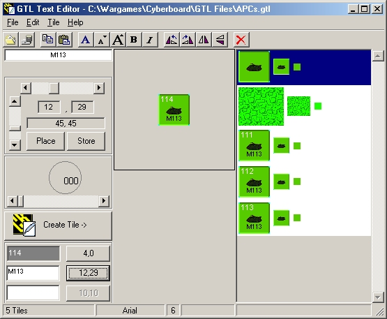

GTL Text Editor is a Microsoft Visual Basic program designed to add text labels to Cyberboard tile image groups. GTL Text Editor allows you to place text which has been formatted using system fonts and colors, and easily position the text anywhere on the counter. The completed tile library files can then be loaded into Cyberboard Designer.
GTL Text Editor was inspired by Bill Gustafsons "Bill's Cyberboard Utilities."
